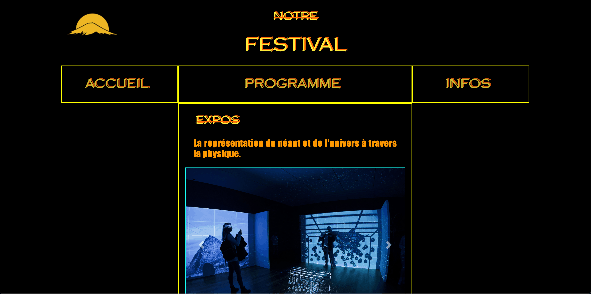

Ce projet est un site d'événementiel présentant un festival d'art numérique. Pour concevoir ce site j'ai du m'appuyer sur les standards du brutalisme web design, décoculant du Brutalisme Design presentant dans l'architechture, illustrer par des oeuvres tel que celle du Corbusier.
Une forte documentation ainsi que de la veille technologique fût nécessaire pour mettre en place ce projet. L'organisation, c'est dérouler en groupe, tandis que la production s'est faite individuelement.
HTML
CSS
Bootstrap
JavaScript